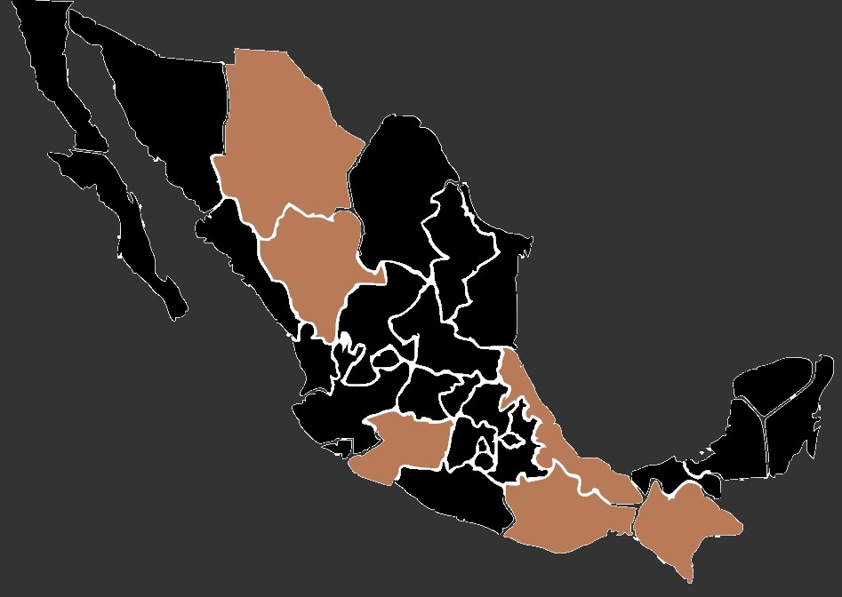

La polilla Luna, es una criatura verdaderamente impresionante en términos de su aspecto físico. Es una de las polillas más grandes que existen, con una envergadura que puede alcanzar entre 8 y 11 centímetros, lo que la convierte en una presencia notable cuando se encuentra en su hábitat natural.
Envergadura: La polilla Luna es una especie de gran tamaño dentro del mundo de las polillas, con una envergadura que puede variar entre 8 y 11 centímetros. Esta dimensión la coloca como una de las más grandes y notables en su hábitat natural, destacando su presencia cuando se encuentra en vuelo o reposo.
Alas: Sus alas son un espectáculo visual único. Combinan una amplia gama de colores que van desde tonos marrones suaves hasta tonalidades de verde y rosa. Las alas anteriores muestran un patrón que se asemeja a los ojos de un búho, con círculos concéntricos y líneas onduladas que otorgan un aspecto fascinante y distintivo. Las alas traseras, por su parte, suelen ser más vibrantes y coloridas, con tonos más intensos que resaltan aún más su belleza.
Textura: La textura de las alas de la polilla Luna es suave y aterciopelada al tacto, lo que añade a su encanto y delicadeza. Esta suavidad es notable y aporta una sensación especial al observar de cerca su estructura, que a pesar de su fragilidad aparente, es resistente y funcional para sus necesidades de vuelo y camuflaje.
Cuerpo: El cuerpo de la polilla Luna es relativamente grande en comparación con sus alas. De color marrón o beige, su cuerpo presenta una estructura robusta, especialmente en el abdomen, que es más voluminoso que el de otras polillas. Este cuerpo robusto alberga los órganos vitales de la polilla y contribuye a su capacidad para volar y reproducirse.
Envergadura: La polilla Luna es una especie de gran tamaño dentro del mundo de las polillas, con una envergadura que puede variar entre 8 y 11 centímetros. Esta dimensión la coloca como una de las más grandes y notables en su hábitat natural, destacando su presencia cuando se encuentra en vuelo o reposo.
Alas: Sus alas son un espectáculo visual único. Combinan una amplia gama de colores que van desde tonos marrones suaves hasta tonalidades de verde y rosa. Las alas anteriores muestran un patrón que se asemeja a los ojos de un búho, con círculos concéntricos y líneas onduladas que otorgan un aspecto fascinante y distintivo. Las alas traseras, por su parte, suelen ser más vibrantes y coloridas, con tonos más intensos que resaltan aún más su belleza.
Textura: La textura de las alas de la polilla Luna es suave y aterciopelada al tacto, lo que añade a su encanto y delicadeza. Esta suavidad es notable y aporta una sensación especial al observar de cerca su estructura, que a pesar de su fragilidad aparente, es resistente y funcional para sus necesidades de vuelo y camuflaje.
Cuerpo: El cuerpo de la polilla Luna es relativamente grande en comparación con sus alas. De color marrón o beige, su cuerpo presenta una estructura robusta, especialmente en el abdomen, que es más voluminoso que el de otras polillas. Este cuerpo robusto alberga los órganos vitales de la polilla y contribuye a su capacidad para volar y reproducirse.
Estas polillas prefieren áreas boscosas y humedales, desde bosques caducifolios hasta zonas montañosas y valles. Buscan ambientes con vegetación diversa, donde pueden encontrar su principal fuente de alimentación, que son las hojas de árboles como el abedul, el nogal, el roble y el arce. Los lugares con follaje denso y variado son ideales para su reproducción y desarrollo.
La polilla Luna es nocturna, lo que significa que es más activa durante la noche. Durante el día, tiende a reposar en áreas protegidas, como en la corteza de los árboles o entre la vegetación, para evitar a los depredadores y el calor del sol. Su vuelo es tranquilo y elegante, moviéndose en patrones suaves y ondulantes mientras busca fuentes de alimento y compañeros para reproducirse. Puede hallarse en estados como Michoacán, Veracruz, Oaxaca, Chiapas, Chihuahua y Durango.
La polilla Luna es nocturna, lo que significa que es más activa durante la noche. Durante el día, tiende a reposar en áreas protegidas, como en la corteza de los árboles o entre la vegetación, para evitar a los depredadores y el calor del sol. Su vuelo es tranquilo y elegante, moviéndose en patrones suaves y ondulantes mientras busca fuentes de alimento y compañeros para reproducirse. Puede hallarse en estados como Michoacán, Veracruz, Oaxaca, Chiapas, Chihuahua y Durango.
Durante la etapa de larvaa, que es la más larga en la vida de la polilla Luna, se alimentan activamente de las hojas de árboles específicos. Prefieren una amplia gama de árboles que incluyen el nogal, cerezo, abedul, haya, álamos y otros árboles de hoja caduca. Las orugas comen grandes cantidades de hojas para obtener los nutrientes necesarios para su crecimiento y desarrollo.
Una vez que emergen como polillas adultas, su principal objetivo ya no es alimentarse, sino reproducirse. Las polillas adultas tienen una vida relativamente corta y no se alimentan en este punto. Su principal enfoque es encontrar pareja para reproducirse y continuar con el ciclo de vida.
Una vez que emergen como polillas adultas, su principal objetivo ya no es alimentarse, sino reproducirse. Las polillas adultas tienen una vida relativamente corta y no se alimentan en este punto. Su principal enfoque es encontrar pareja para reproducirse y continuar con el ciclo de vida.
•Las polillas Luna tienen antenas plumosas o peinadas, características que las diferencian de las mariposas. Estas antenas están diseñadas para detectar feromonas y ayudar en la búsqueda de pareja durante la fase adulta.
•El patrón en sus alas anteriores se asemeja a los ojos de un búho, lo que les proporciona camuflaje y ayuda a disuadir a los depredadores potenciales. Este patrón les ayuda a mezclarse con su entorno y confundir a posibles amenazas.
•A pesar de su tamaño y belleza, las polillas Luna tienen una vida adulta corta, que puede durar solo alrededor de una semana. Durante este tiempo, su principal objetivo es reproducirse.
•Aunque brevemente activas como adultos, las polillas Luna contribuyen a la polinización de ciertas plantas mientras buscan néctar. Son conocidas por su papel en la polinización de algunas flores nocturnas y pueden ser beneficiosas para el ecosistema en esta capacidad.
•El patrón en sus alas anteriores se asemeja a los ojos de un búho, lo que les proporciona camuflaje y ayuda a disuadir a los depredadores potenciales. Este patrón les ayuda a mezclarse con su entorno y confundir a posibles amenazas.
•A pesar de su tamaño y belleza, las polillas Luna tienen una vida adulta corta, que puede durar solo alrededor de una semana. Durante este tiempo, su principal objetivo es reproducirse.
•Aunque brevemente activas como adultos, las polillas Luna contribuyen a la polinización de ciertas plantas mientras buscan néctar. Son conocidas por su papel en la polinización de algunas flores nocturnas y pueden ser beneficiosas para el ecosistema en esta capacidad.